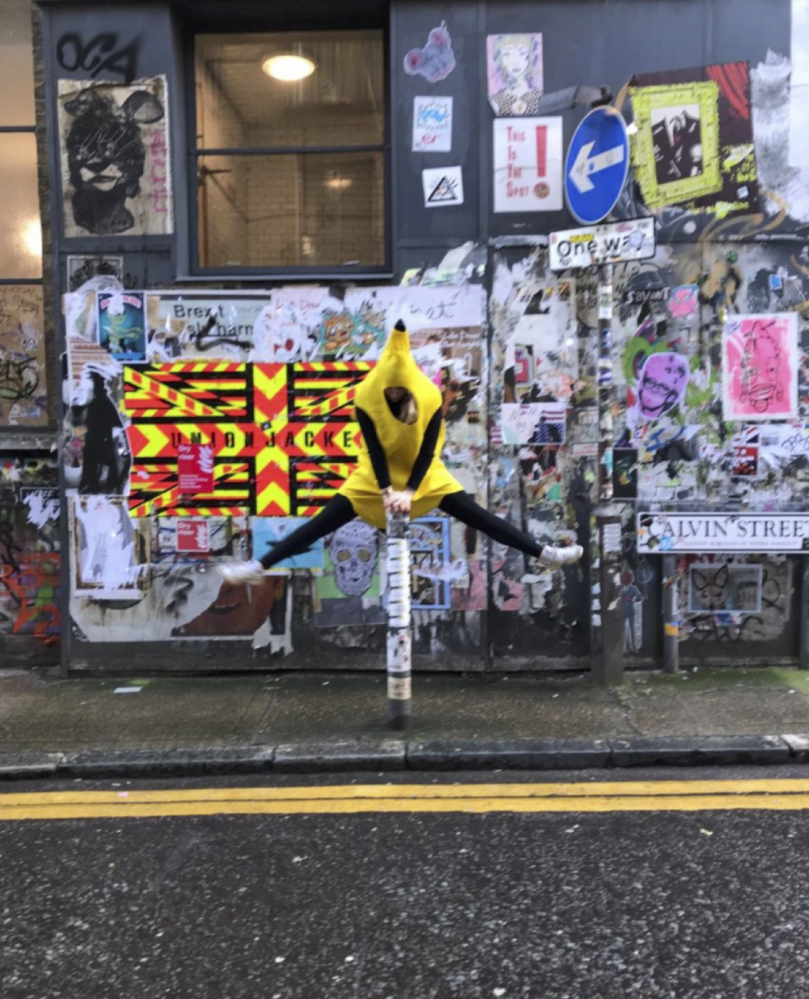

ABOUT


Hi there! I’m a Creative Technologist with a focus on Human-Computer Interaction. I work at the intersection of AI, UX design, and creative technology, always looking for ways to make tech more human and accessible. My goal is to create tools that help people, especially children, better understand and engage with the world around them. Right now, I’m diving deeper into UX/UI design through my master’s studies. I believe technology should be empowering, educational, and help bring people closer together.